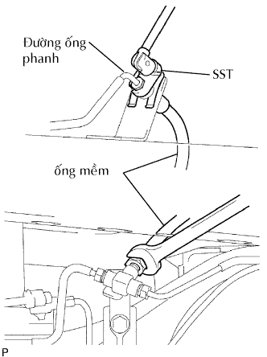

LÒ XO TRỤ PHÍA SAU > THÁO |
| 1. THÁO BÁNH XE SAU |
| 2. THÁO DÂY CẢM BIẾN ĐIỀU KHIỂN TRƯỢT |
| 3. THÁO ĐUÔI ỐNG XẢ |
Tháo đuôi ống xả. (Xem trang Kích chuột vào đây).
| 4. NGẮT CỤM CÁP PHANH TAY NO.3 |
Ngắt cáp phanh tay No.3 (Xem trang Kích chuột vào đây).
| 5. LẮP ỐNG MỀM CỦA PHANH SAU |
|  |
Dùng SST, ngắt đường ống phanh ra khỏi ống mền.
Dùng một tô vít, tháo kẹp.
Tháo ống mềm ra khởi cút chữ T.
| 6. THÁO BỘ GIẢM CHẤN PHÍA SAU |
 |
Đỡ vỏ cầu xe.
Kích xe và đỡ khung xe lên giá đỡ.
Hạ vỏ cầu xe xuống cho đến khi sức căng lò xo trụ được giải thoát và giữ lại vị trí này.
Tháo đai ốc và 2 cái hãm.
 |
Tháo 2 bu lông.
Ngắt bộ giảm chấn và 2 bạc ra khỏi vỏ cầu và khung xe.
Tháo đai ốc hãm, giá bắt, 3 hãm và 2 đệm.
| 7. THÁO LÒ XO TRỤ PHÍA SAU |
Hạ thấp dần dần vỏ cầu sau xuống.
Trong khi hạ thấp vỏ cầu, hãy tháo lò xo trụ và cao su.